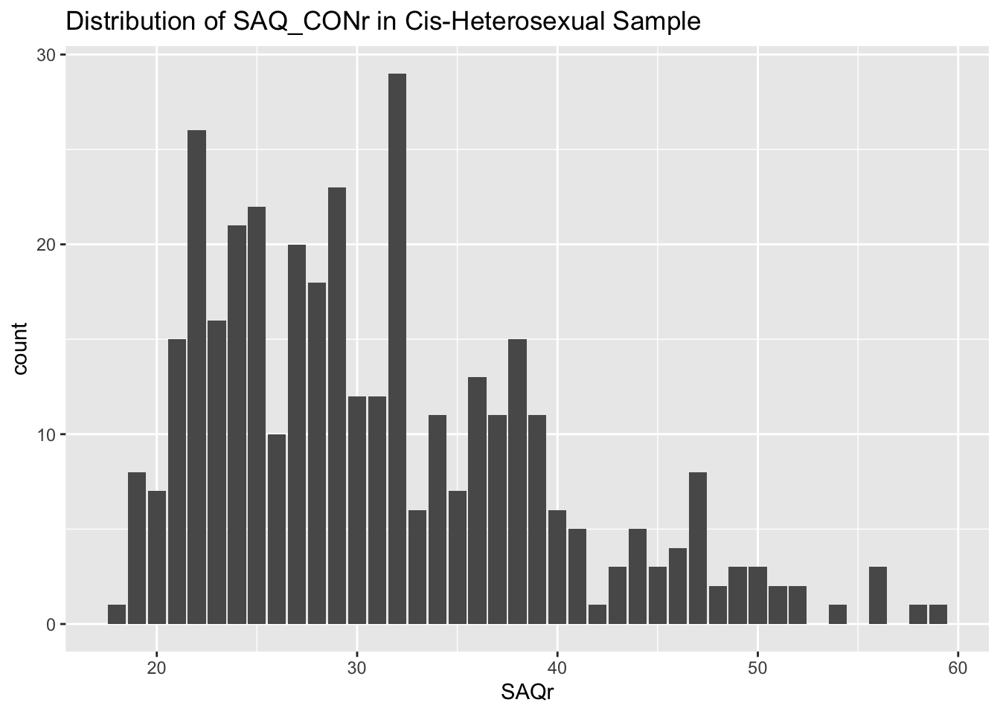

Show the code
org_data <- read_sav("sgi_data.sav")
data <- org_dataUpdate:
2/29/2024
org_data <- read_sav("sgi_data.sav")
data <- org_datadata <- rename(data,
# Demographic Variables
rel = relationshipstatus,
rel_other = relstatus_other,
sex = biologicalsex,
sex_other = biosex_other,
gender_status = genderminority,
faith_gen = importancegenderIDfaith,
sexual_status = sexualminority,
sexori = sexualorientation,
sexori_other = sexorientation_other,
faith_sex = importancesexualityIDfaith,
faith_id = personoffaith,
religion = faithaffiliation,
religion_other = faithaffiliation_other,
durel_ir1 = DURELIntrRel1,
durel_ir2 = DURELIntrRel2,
durel_ir3 = DURELIntrRel3,
durel_ora1 = DURELOrganRel1,
durel_nora1 = DUREL_NOR1PrayerTime,
durel_nora2 = DUREL_NOR2BibleTime,
durel_nora3 = DUREL_NOR3MeditTime,
ccaps_sa1 = CCAPS_SocAnx1,
ccaps_ga1 = CCAPS_GenAnx1,
ccaps_ec1 = CCAPS_EatConc1,
ccaps_dep1 = CCAPS_Dep1,
attention1 = q0092_0005,
ccaps_dep6 = CCAPS_Dep6,
ccaps_ec3 = CCAPS_EatConc3,
ccaps_ga2 = CCAPS_GenAnx2,
ccaps_ad1 = CCAPS_AcadDis1,
ccaps_ga3 = CCAPS_GenAnx3,
ccaps_ga4 = CCAPS_GenAnx4,
ccaps_dep4 = CCAPS_Dep4,
ccaps_dep3 = CCAPS_Dep3,
ccaps_ec2 = CCAPS_EatConc2,
ccaps_au1 = CCAPS_AlcUse1,
ccaps_ga5 = CCAPS_GenAnx5,
ccaps_au2 = CCAPS_AlcUse2,
ccaps_ga6 = CCAPS_GenAnx6,
ccaps_hos5 = CCAPS_Hostil5,
ccaps_sa2 = CCAPS_SocAnx2,
ccaps_hos4 = CCAPS_Hostil4,
ccaps_dep5 = CCAPS_Dep5,
ccaps_sa3 = CCAPS_SocAnx3,
ccaps_hos3 = CCAPS_Hostil3,
ccaps_sa4 = CCAPS_SocAnx4,
ccaps_dep2 = CCAPS_Dep2,
ccaps_sa5 = CCAPS_SocAnx5,
ccaps_au3 = CCAPS_AlcUse3,
ccaps_ad4 = CCAPS_AcadDis4,
ccaps_hos2 = CCAPS_Hostil2,
ccaps_ad2 = CCAPS_AcadDis2,
ccaps_au4 = CCAPS_AlcUse4,
ccaps_hos1 = CCAPS_Hostil1,
ccaps_ad3 = CCAPS_AcadDis3,
ccaps_hos6 = CCAPS_Hostil6,
ccaps_fd1 = CCAPS_FamDis1,
ccaps_fd2 = CCAPS_FamDis2,
ccaps_fd3 = CCAPS_FamDis3,
ccaps_fd4 = CCAPS_FamDis4,
ccaps_fd5 = CCAPS_FamDis5,
ccaps_fd6 = CCAPS_FamDis6,
saq_pbaw6 = SAQ_PBAW6,
saq_pbaw7 = SAQ_PBAW7,
saq_pbaw8 = SAQ_PBAW8,
saq_con4 = SAQ_Conditionality4,
saq_pbaw9 = SAQ_PBAW9,
saq_pbaw5 = SAQ_PBAW5,
saq_pbaw1 = SAQ_PBAW1,
saq_con5 = SAQ_Conditionality5,
attention2 = q0109_0004,
saq_con3 = SAQ_Conditionality3,
saq_pbaw4 = SAQ_PBAW4,
saq_pbaw10 = SAQ_PBAW10,
saq_con2 = SAQ_Conditionality2,
saq_pbaw2 = SAQ_PBAW2,
saq_pbaw11 = SAQ_PBAW11,
attention3 = q0110_0004,
saq_pbaw3 = SAQ_PBAW3,
saq_con1 = SAQ_Conditionality1,
saq_pbaw12 = SAQ_PBAW12)data$RID <- seq_len(nrow(data))
data <- data %>% select(RID, everything())data <- data %>%
filter(!(attention1 == 3 & attention2 == 1 & attention3 == 1))From 755, 100 paricipants were removed.
data %>%
filter(longstring >= 15) %>%
select(RID) %>%
print() RID
1 45
2 82
3 124
4 126
5 134
6 150
7 176
8 177
9 179
10 210
11 219
12 227
13 245
14 325
15 347
16 359
17 432
18 443
19 452
20 454
21 494
22 512
23 513
24 547
25 562
26 574
27 576
28 580
29 584
30 599
31 615
32 623
33 634
34 635
35 695
36 717
37 740rids_to_remove <- data %>%
filter(longstring >= 15) %>%
pull(RID)
rids_to_remove [1] 45 82 124 126 134 150 176 177 179 210 219 227 245 325 347 359 432 443 452
[20] 454 494 512 513 547 562 574 576 580 584 599 615 623 634 635 695 717 740We identified the following RIDs (or respondents) who have a longstring of responses (consecutive responses) greater than 15. Such respondents were removed from the dataframe.
We will follow up with a final check to measure if any respondents are straight-lining in little to no variation.
data <- data %>%
filter(!(RID %in% rids_to_remove))Goes down to 655 to 618.
data %>%
filter(irv3 == 0) %>%
select(RID) %>%
print()[1] RID
<0 rows> (or 0-length row.names)data %>%
filter(irv4 == 0) %>%
select(RID) %>%
print()[1] RID
<0 rows> (or 0-length row.names)We see that there are no respondents who have straight-lined anymore.
Hello
## DUREL
# Create new dataframe
selected_vars <- c("durel_ir1", "durel_ir2", "durel_ir3", "durel_ora1", "durel_nora1", "durel_nora2", "durel_nora3")
scales_data <- subset(data, select = selected_vars)
# Set up scoring rules
keys <- make.keys(scales_data, list(
DUREL_IRr=c("durel_ir1", "durel_ir2", "durel_ir3"),
DUREL_NORAr=c("durel_nora1", "durel_nora2", "durel_nora3"),
DURELr=c("durel_ir1", "durel_ir2", "durel_ir3", "durel_ora1", "durel_nora1", "durel_nora2", "durel_nora3")))
scores <- scoreItems(keys,scales_data, totals = TRUE)
# Add scored variabels into dataframe
data$DUREL_IRr <- scores[["scores"]][, "DUREL_IRr"]
data$DUREL_NORAr <- scores[["scores"]][, "DUREL_NORAr"]
data$DURELr <- scores[["scores"]][, "DURELr"]
# Alpha
scores$alpha DUREL_IRr DUREL_NORAr DURELr
alpha 0.9301834 0.759587 0.9152463Note: DUREL_IRr is the raw sum scores of ir1, ir2, ir3. DUREL_NORAr is the raw sum scores of nora1, nora2, nora3. durel_ora1 is a stand alone item and should not be calculated with other variables. DURELr is the total raw sum score of all durel items including durel_ora1.
## CCAPS-34
# Create new dataframe
selected_vars <- c("ccaps_sa1", "ccaps_sa2", "ccaps_sa3", "ccaps_sa4", "ccaps_sa5",
"ccaps_ga1", "ccaps_ga2", "ccaps_ga3", "ccaps_ga4", "ccaps_ga5", "ccaps_ga6",
"ccaps_ec1", "ccaps_ec3", "ccaps_ec2",
"ccaps_dep1", "ccaps_dep6", "ccaps_dep4", "ccaps_dep3", "ccaps_dep5", "ccaps_dep2",
"ccaps_ad1", "ccaps_ad4","ccaps_ad2","ccaps_ad3",
"ccaps_au1", "ccaps_au2", "ccaps_au3", "ccaps_au4",
"ccaps_hos5", "ccaps_hos4", "ccaps_hos3", "ccaps_hos2", "ccaps_hos1", "ccaps_hos6",
"ccaps_fd1", "ccaps_fd2", "ccaps_fd3", "ccaps_fd4", "ccaps_fd5", "ccaps_fd6")
scales_data <- subset(data, select = selected_vars)
# Set up scoring rules
keys <- make.keys(scales_data, list(
CCAPS_SAr=c("ccaps_sa1", "-ccaps_sa2", "ccaps_sa3", "ccaps_sa4","ccaps_sa5"),
CCAPS_GAr=c("ccaps_ga1", "ccaps_ga2", "ccaps_ga3", "ccaps_ga4", "ccaps_ga5", "ccaps_ga6"),
CCAPS_ECr=c("ccaps_ec1", "ccaps_ec3", "ccaps_ec2"),
CCAPS_DEPr=c("ccaps_dep1", "ccaps_dep6", "ccaps_dep4", "ccaps_dep3", "ccaps_dep5", "ccaps_dep2"),
CCAPS_ADr=c("ccaps_ad1", "ccaps_ad4","ccaps_ad2","ccaps_ad3"),
CCAPS_AUr=c("ccaps_au1", "ccaps_au2", "ccaps_au3", "ccaps_au4"),
CCAPS_HOSr=c("ccaps_hos5", "ccaps_hos4", "ccaps_hos3", "ccaps_hos2", "ccaps_hos1", "ccaps_hos6"),
CCAPS_FDr=c("ccaps_fd1", "-ccaps_fd2", "ccaps_fd3", "-ccaps_fd4", "ccaps_fd5", "ccaps_fd6")
))
scores <- scoreItems(keys,scales_data, totals = TRUE)
# Add scored variabels into dataframe
data$CCAPS_SAr <- scores[["scores"]][, "CCAPS_SAr"]
data$CCAPS_GAr <- scores[["scores"]][, "CCAPS_GAr"]
data$CCAPS_ECr <- scores[["scores"]][, "CCAPS_ECr"]
data$CCAPS_DEPr <- scores[["scores"]][, "CCAPS_DEPr"]
data$CCAPS_ADr <- scores[["scores"]][, "CCAPS_ADr"]
data$CCAPS_AUr <- scores[["scores"]][, "CCAPS_AUr"]
data$CCAPS_HOSr <- scores[["scores"]][, "CCAPS_HOSr"]
data$CCAPS_FDr <- scores[["scores"]][, "CCAPS_FDr"]
# Alpha
scores$alpha CCAPS_SAr CCAPS_GAr CCAPS_ECr CCAPS_DEPr CCAPS_ADr CCAPS_AUr CCAPS_HOSr
alpha 0.811554 0.8707634 0.8363041 0.8914566 0.7841236 0.8365073 0.8498283
CCAPS_FDr
alpha 0.8469976CCAPS subscales were calculated with the raw sum of scores. Each subscale exhibited acceptable internal reliability.
## Relational Quality
# Create new dataframe
selected_vars <- c(
"saq_pbaw6", "saq_pbaw7", "saq_pbaw8", "saq_pbaw4", "saq_pbaw10", "saq_pbaw9", "saq_pbaw5", "saq_pbaw1", "saq_pbaw2", "saq_pbaw11", "saq_pbaw3", "saq_pbaw12",
"saq_con4", "saq_con5", "saq_con3", "saq_con2", "saq_con1")
scales_data <- subset(data, select = selected_vars)
# Set up scoring rules
keys <- make.keys(scales_data, list(
SAQ_PBAWr=c("saq_pbaw6", "saq_pbaw7", "saq_pbaw8", "saq_pbaw4", "saq_pbaw10", "saq_pbaw9", "saq_pbaw5", "saq_pbaw1", "saq_pbaw2", "saq_pbaw11", "saq_pbaw3", "saq_pbaw12"),
SAQ_CONr=c("saq_con4", "saq_con5", "saq_con3", "saq_con2", "saq_con1"),
SAQr=c("saq_pbaw6", "saq_pbaw7", "saq_pbaw8", "saq_pbaw4", "saq_pbaw10", "saq_pbaw9", "saq_pbaw5", "saq_pbaw1", "saq_pbaw2", "saq_pbaw11", "saq_pbaw3", "saq_pbaw12", "saq_con4", "saq_con5", "saq_con3", "saq_con2", "saq_con1")))
scores <- scoreItems(keys,scales_data, totals = TRUE)
# Add scored variabels into dataframe
data$SAQ_PBAWr <- scores[["scores"]][, "SAQ_PBAWr"]
data$SAQ_CONr <- scores[["scores"]][, "SAQ_CONr"]
data$SAQr <- scores[["scores"]][, "SAQr"]
# Alpha
scores$alpha SAQ_PBAWr SAQ_CONr SAQr
alpha 0.9054021 0.7665662 0.9051575data$sgm <- ifelse((data$gender_status == 1 | data$gender_status == 2) | (data$sexual_status == 2 | data$sexual_status == 3), 1, 0)
sgm_data <- subset(data, sgm == 1)
cishet_data <- subset(data, sgm == 0)
data$sgm <- ifelse(data$sgm == 0, "Cis-Het", "SGM")ggplot(data) +
geom_bar(data = filter(data, sgm == "Cis-Het"), aes(x = CCAPS_DEPr, fill = "Cis-Het"), alpha = .6) +
geom_bar(data = filter(data, sgm == "SGM"), aes(x = CCAPS_DEPr, fill = "SGM"), alpha = 0.6) +
scale_fill_manual(values = c("Cis-Het" = "red", "SGM" = "blue")) +
labs(title = "Depression", fill = "Group")ggplot(data) +
geom_bar(data = filter(data, sgm == "Cis-Het"), aes(x = CCAPS_GAr, fill = "Cis-Het"), alpha = .6) +
geom_bar(data = filter(data, sgm == "SGM"), aes(x = CCAPS_GAr, fill = "SGM"), alpha = 0.6) +
scale_fill_manual(values = c("Cis-Het" = "red", "SGM" = "blue")) +
labs(title = "Genderalized Anxiety", fill = "Group")ggplot(data) +
geom_bar(data = filter(data, sgm == "Cis-Het"), aes(x = CCAPS_ADr, fill = "Cis-Het"), alpha = .6) +
geom_bar(data = filter(data, sgm == "SGM"), aes(x = CCAPS_ADr, fill = "SGM"), alpha = 0.6) +
scale_fill_manual(values = c("Cis-Het" = "red", "SGM" = "blue")) +
labs(title = "Academic Distress", fill = "Group")
ggplot(data) +
geom_bar(data = filter(data, sgm == "Cis-Het"), aes(x = faith_id, fill = "Cis-Het"), alpha = .6) +
geom_bar(data = filter(data, sgm == "SGM"), aes(x = faith_id, fill = "SGM"), alpha = 0.6) +
scale_fill_manual(values = c("Cis-Het" = "red", "SGM" = "blue")) +
labs(title = "Person of Faith", fill = "Group")Warning: Removed 2 rows containing non-finite values (`stat_count()`).ggplot(data) +
geom_bar(data = filter(data, sgm == "Cis-Het"), aes(x = SAQr, fill = "Cis-Het"), alpha = .6) +
geom_bar(data = filter(data, sgm == "SGM"), aes(x = SAQr, fill = "SGM"), alpha = 0.6) +
scale_fill_manual(values = c("Cis-Het" = "red", "SGM" = "blue")) +
labs(title = "Spiritual Abuse Questionaire", fill = "Group")data$religion_other <- tolower(data$religion_other)
data <- data %>%
mutate(religion_col = case_when(
faith_id == 2 ~ "Not Religious",
religion == 2 ~ "Catholic",
religion %in% c(3, 4) ~ "Christian",
religion %in% c(5, 6, 7, 8) ~ "Other",
str_detect(str_to_lower(religion_other), "saint") ~ "Latter-day Saints",
str_detect(str_to_lower(religion_other), "saints") ~ "Latter-day Saints",
str_detect(str_to_lower(religion_other), "lds") ~ "Latter-day Saints",
str_detect(str_to_lower(religion_other), "baptist") ~ "Christian",
str_detect(str_to_lower(religion_other), "denom") ~ "Latter-day Saints",
str_detect(str_to_lower(religion_other), "mormon") ~ "Latter-day Saints",
str_detect(str_to_lower(religion_other), "presbyterian") ~ "Latter-day Saints",
str_to_lower(religion_other) == "christian" ~ "Christian",
str_to_lower(religion_other) == "christianity" ~ "Christian",
TRUE ~ "Other" # Keep the original value of religion_other
))
# Create dem table
selected_vars <- c("sex", "age", "gender_status", "sexori", "religion_col")
dem_data <- subset(data, select = selected_vars)
dem_data$sex <- haven::as_factor(data$sex)
dem_data$gender_status <- haven::as_factor(data$gender_status)
dem_data$sexual_status <- haven::as_factor(data$sexual_status)
dem_data$sexori <- haven::as_factor(data$sexori)
dem_data$age <- as.numeric(data$age)Warning: NAs introduced by coerciontable1 <-
dem_data %>%
tbl_summary(
label = list(sex ~ "Biological Sex/Sex Assigned at Birth",
sexual_status ~ "Are you a Sexual Minority?",
gender_status ~ "Gender Identity",
sexori ~ "Sexual Orientation",
religion_col ~ "Religion"),
missing = "no",
type = list(
age ~ "continuous2"
),
statistic = list(
all_continuous() ~ "{mean} ({sd})",
all_categorical() ~ "{n} ({p}%)"
),
digits = all_continuous() ~ 2
) %>%
modify_header(label = "") %>%
modify_caption("*Demographic Information* (N = {N})")
table1| N = 6181 | |
|---|---|
| Biological Sex/Sex Assigned at Birth | |
| Other (please specify) | 0 (0%) |
| Male | 180 (29%) |
| Female | 437 (71%) |
| age | |
| Mean (SD) | 20.74 (3.50) |
| Gender Identity | |
| Yes | 65 (11%) |
| Unsure | 17 (2.8%) |
| No | 536 (87%) |
| Sexual Orientation | |
| Other (please specify) | 22 (8.8%) |
| Heterosexual | 25 (10.0%) |
| Same-Sex Oriented | 43 (17%) |
| Bisexual | 86 (34%) |
| Pansexual | 21 (8.4%) |
| Asexual | 16 (6.4%) |
| No Label | 21 (8.4%) |
| Not Sure | 17 (6.8%) |
| Religion | |
| Catholic | 83 (13%) |
| Christian | 267 (43%) |
| Latter-day Saints | 68 (11%) |
| Not Religious | 157 (25%) |
| Other | 43 (7.0%) |
| Are you a Sexual Minority? | |
| No | 370 (60%) |
| Unsure | 52 (8.5%) |
| Yes | 193 (31%) |
| 1 n (%) | |
table1 %>%
as_flex_table() %>%
flextable::save_as_docx(table1, path = "ethan_dem_table.docx")
ct1 = crosstable(dem_data, c(gender_status), by = c(sexual_status), total="both", percent_pattern="{n} ({p_row})", percent_digits=0) %>%
as_flextable()
ct1label | variable | Are you a sexual minority (and may or may not identify as LGBTQ+), or are you navigating sexual identity? | Total | |||
|---|---|---|---|---|---|---|
No | Unsure | Yes | NA | |||
Are you transgender, gender nonbinary, or another non-cisgender, or are you navigating gender identity (and may or may not identify as transgender), or have you done so in the past? | Yes | 0 (0%) | 4 (6%) | 60 (94%) | 1 | 65 (11%) |
Unsure | 3 (18%) | 1 (6%) | 13 (76%) | 0 | 17 (3%) | |
No | 367 (69%) | 47 (9%) | 120 (22%) | 2 | 536 (87%) | |
Total | 370 (60%) | 52 (8%) | 193 (31%) | 3 | 618 (100%) | |
data$sgm <- ifelse((data$gender_status == 1 | data$gender_status == 2) | (data$sexual_status == 2 | data$sexual_status == 3), 1, 0)
sgm_data <- subset(data, sgm == 1)
cishet_data <- subset(data, sgm == 0)ggplot(sgm_data, aes(SAQr)) +
geom_bar() +
labs(title = "Distribution of SAQr in SGM Sample")shapiro.test(sgm_data$SAQr)
Shapiro-Wilk normality test
data: sgm_data$SAQr
W = 0.9822, p-value = 0.003282ggplot(sgm_data, aes(SAQ_PBAWr)) +
geom_bar() +
labs(title = "Distribution of SAQ-PBAWr in SGM Sample")shapiro.test(sgm_data$SAQ_PBAWr)
Shapiro-Wilk normality test
data: sgm_data$SAQ_PBAWr
W = 0.98643, p-value = 0.01847ggplot(sgm_data, aes(SAQ_CONr)) +
geom_bar() +
labs(title = "Distribution of SAQ_CONr in SGM Sample")shapiro.test(sgm_data$SAQ_CONr)
Shapiro-Wilk normality test
data: sgm_data$SAQ_CONr
W = 0.96339, p-value = 5.528e-06ggplot(cishet_data, aes(SAQr)) +
geom_bar() +
labs(title = "Distribution of SAQ_CONr in Cis-Heterosexual Sample")
shapiro.test(cishet_data$SAQr)
Shapiro-Wilk normality test
data: cishet_data$SAQr
W = 0.93689, p-value = 2.296e-11ggplot(cishet_data, aes(SAQ_PBAWr)) +
geom_bar() +
labs(title = "Distribution of SAQ_PBAWr in Cis-Heterosexual Sample")shapiro.test(cishet_data$SAQ_PBAWr)
Shapiro-Wilk normality test
data: cishet_data$SAQ_PBAWr
W = 0.93961, p-value = 4.606e-11ggplot(cishet_data, aes(SAQ_CONr)) +
geom_bar() +
labs(title = "Distribution of SAQ_CONr in Cis-Heterosexual Sample")shapiro.test(cishet_data$SAQ_CONr)
Shapiro-Wilk normality test
data: cishet_data$SAQ_CONr
W = 0.94306, p-value = 1.151e-10Preliminary results show that SAQr for both SGMs and Cis-hets are not normally distributed and will use non-parametric tests such as Mann-Whiteney U Test for examining differences.
library(pacman)
pacman::p_load(naniar)
vis_miss(sgm_data)sgm_data <- sgm_data %>%
mutate(across(where(is.numeric), ~ifelse(is.na(.), median(., na.rm = TRUE), .)))
vis_miss(cishet_data)cishet_data <- cishet_data %>%
mutate(across(where(is.numeric), ~ifelse(is.na(.), median(., na.rm = TRUE), .)))Results show that after removing respondents with ANY missing responses, 249 -> 173 respondents. To preserve responses, median imputation will be performed in conjunction with subsequent analyses.
descriptive_data <- data %>%
select(
SAQr, SAQ_PBAWr, SAQ_CONr,
sgm
)
descriptive_data %>%
tbl_summary(
by = sgm,
statistic = list(
all_continuous() ~ "{mean} ({sd})",
all_categorical() ~ "{n} / {N} ({p}%)"
),
digits = all_continuous() ~ 2,
missing_text = "(Missing)"
) %>%
modify_caption("**Descriptive Table** (N = {N})")2 observations missing `sgm` have been removed. To include these observations, use `forcats::fct_na_value_to_level()` on `sgm` column before passing to `tbl_summary()`.| Characteristic | 0, N = 3671 | 1, N = 2491 |
|---|---|---|
| SAQr | 31.09 (8.43) | 41.31 (10.23) |
| SAQ_PBAWr | 22.15 (6.84) | 30.48 (7.69) |
| SAQ_CONr | 8.94 (2.97) | 10.83 (3.79) |
| 1 Mean (SD) | ||
t_data <- data %>%
select(
# spiritual formation
SAQr, SAQ_PBAWr, SAQ_CONr,
sgm
)
results <- nice_t_test(
data = t_data,
response = names(t_data)[1:3],
group = "sgm",
warning = FALSE
) %>%
nice_table(title = "t-Test and Cohen's")
resultst-Test and Cohen's | |||||
|---|---|---|---|---|---|
Dependent Variable | t | df | p | d | 95% CI |
SAQr | -13.05 | 462.76 | < .001*** | -1.11 | [-1.28, -0.94] |
SAQ_PBAWr | -13.80 | 490.01 | < .001*** | -1.16 | [-1.33, -0.98] |
SAQ_CONr | -6.61 | 445.03 | < .001*** | -0.57 | [-0.73, -0.40] |
wilcox.test(sgm_data$SAQ_PBAWr, cishet_data$SAQ_PBAWr)
Wilcoxon rank sum test with continuity correction
data: sgm_data$SAQ_PBAWr and cishet_data$SAQ_PBAWr
W = 72580, p-value < 2.2e-16
alternative hypothesis: true location shift is not equal to 0Results show that there is a significant difference between SGMs and Cis-Heterosexuals reporting SAQ_PBAWr levels. SGMs reported moderately higher rates of SAQ_PBAWr compared to Cis-Heterosexuals.
wilcox.test(sgm_data$SAQ_CONr, cishet_data$SAQ_CONr)
Wilcoxon rank sum test with continuity correction
data: sgm_data$SAQ_CONr and cishet_data$SAQ_CONr
W = 58910, p-value = 8.895e-10
alternative hypothesis: true location shift is not equal to 0Results show that there is a significant difference between SGMs and Cis-Heterosexuals reporting SAQ_CONr levels. SGMs reported slightly higher rates of SAQ_CONr compared to Cis-Heterosexuals.
wilcox.test(sgm_data$SAQr, cishet_data$SAQr)
Wilcoxon rank sum test with continuity correction
data: sgm_data$SAQr and cishet_data$SAQr
W = 71667, p-value < 2.2e-16
alternative hypothesis: true location shift is not equal to 0Results show that there is a significant difference between SGMs and Cis-Heterosexuals reporting SAQr levels. SGMs reported slightly higher rates of SAQr compared to Cis-Heterosexuals.
selected_vars <- c("sex", "age", "gender_status", "sexori", "religion_col")
dem_data <- subset(sgm_data, select = selected_vars)
dem_data <- copy_labels(sgm_data, data)
dem_data$sex <- as_label(dem_data$sex)
dem_data$gender_status <- as_label(dem_data$gender_status)
dem_data$sexual_status <- as_label(dem_data$sexual_status)
dem_data$sexori <- as_label(dem_data$sexori)
dem_data$sex <- as_label(dem_data$sex)
table1 <-
dem_data %>%
tbl_summary(
include = c((sex), ((gender_status)), sexual_status, ((sexori)), religion_col),
label = list(sex ~ "Biological Sex/Sex Assigned at Birth", sexual_status ~ "Are you a Sexual Minority?", gender_status ~ "Gender Identity", sexori ~ "Sexual Orientation", religion_col ~ "Religion"),
missing = "no") %>%
modify_header(label = "") %>%
modify_caption("*Demographic Information* (N = {N})")
table1| N = 2491 | |
|---|---|
| Biological Sex/Sex Assigned at Birth | |
| Other (please specify) | 0 (0%) |
| Male | 45 (18%) |
| Female | 204 (82%) |
| Gender Identity | |
| Yes | 65 (26%) |
| Unsure | 17 (6.8%) |
| No | 167 (67%) |
| Are you a Sexual Minority? | |
| No | 3 (1.2%) |
| Unsure | 52 (21%) |
| Yes | 194 (78%) |
| Sexual Orientation | |
| Other (please specify) | 22 (8.8%) |
| Heterosexual | 22 (8.8%) |
| Same-Sex Oriented | 43 (17%) |
| Bisexual | 88 (35%) |
| Pansexual | 21 (8.4%) |
| Asexual | 15 (6.0%) |
| No Label | 21 (8.4%) |
| Not Sure | 17 (6.8%) |
| Religion | |
| Catholic | 28 (11%) |
| Christian | 95 (38%) |
| Latter-day Saints | 6 (2.4%) |
| Not Religious | 98 (39%) |
| Other | 22 (8.8%) |
| 1 n (%) | |
table1 %>%
as_flex_table() %>%
flextable::save_as_docx(table1, path = "ethan_sgm_dem_table.docx")
sgm_data <-
sgm_data %>%
mutate(religion_col = case_when(
religion_col == "Catholic" ~ 0,
religion_col == "Christian" ~ 1,
religion_col == "Latter-day Saints" ~ 2,
religion_col == "Not Religious" ~ 3,
religion_col == "Other" ~ 4
))Rationale: We are performing wilcox, pearsons, and ANOVAs to test for covariates specific to regression models. Demographic variables significantly related to Dependent Variable will be included in subsequent analyses.
sgm_data$age <- as.numeric(sgm_data$age)
sgm_data$gender_status <- ifelse((sgm_data$gender_status == 1 | sgm_data$gender_status == 2), "Gender Minority", "Cis-Gender")
wilcox.test(CCAPS_DEPr ~ gender_status, data = sgm_data)
Wilcoxon rank sum test with continuity correction
data: CCAPS_DEPr by gender_status
W = 5511.5, p-value = 0.01232
alternative hypothesis: true location shift is not equal to 0cor.test(sgm_data$CCAPS_DEPr, sgm_data$age)
Pearson's product-moment correlation
data: sgm_data$CCAPS_DEPr and sgm_data$age
t = -1.3213, df = 243, p-value = 0.1876
alternative hypothesis: true correlation is not equal to 0
95 percent confidence interval:
-0.20758897 0.04130858
sample estimates:
cor
-0.08445748 wilcox.test(CCAPS_DEPr ~ sex, data = sgm_data)
Wilcoxon rank sum test with continuity correction
data: CCAPS_DEPr by sex
W = 4250, p-value = 0.4369
alternative hypothesis: true location shift is not equal to 0summary(aov(CCAPS_DEPr ~ religion_col, data = sgm_data)) Df Sum Sq Mean Sq F value Pr(>F)
religion_col 1 13 12.70 0.309 0.579
Residuals 247 10159 41.13 summary(aov(CCAPS_DEPr ~ sexori, data = sgm_data)) Df Sum Sq Mean Sq F value Pr(>F)
sexori 1 4 4.24 0.103 0.749
Residuals 247 10168 41.16 Depression was significantly related to Gender Status (Cis or Trans/GD). Otherise, depression was not significantly associated with age, biological sex, religious identification, or sexual orientation. Gender Status will be added to subsequent analyses with Depression.
cor.test(sgm_data$age, sgm_data$CCAPS_GAr)
Pearson's product-moment correlation
data: sgm_data$age and sgm_data$CCAPS_GAr
t = -2.014, df = 243, p-value = 0.04511
alternative hypothesis: true correlation is not equal to 0
95 percent confidence interval:
-0.249455088 -0.002849136
sample estimates:
cor
-0.1281322 wilcox.test(CCAPS_GAr ~ sex, data = sgm_data)
Wilcoxon rank sum test with continuity correction
data: CCAPS_GAr by sex
W = 3485, p-value = 0.01145
alternative hypothesis: true location shift is not equal to 0wilcox.test(CCAPS_GAr ~ gender_status, data = sgm_data)
Wilcoxon rank sum test with continuity correction
data: CCAPS_GAr by gender_status
W = 5988, p-value = 0.1076
alternative hypothesis: true location shift is not equal to 0summary(aov(CCAPS_GAr ~ religion_col, data = sgm_data)) Df Sum Sq Mean Sq F value Pr(>F)
religion_col 1 57 56.71 1.386 0.24
Residuals 247 10107 40.92 summary(aov(CCAPS_GAr ~ sexori, data = sgm_data)) Df Sum Sq Mean Sq F value Pr(>F)
sexori 1 1 0.70 0.017 0.896
Residuals 247 10163 41.14 Generalized Anxiety was significantly related to Biological Sex and Age. Otherwise, GA was not significantly related with religious identification or sexual orientation. Biological Sex and Age will be added to subsequent analyses with Generalized Anxiety.
wilcox.test(CCAPS_ADr ~ gender_status, data = sgm_data)
Wilcoxon rank sum test with continuity correction
data: CCAPS_ADr by gender_status
W = 6455.5, p-value = 0.4628
alternative hypothesis: true location shift is not equal to 0cor.test(sgm_data$CCAPS_ADr, sgm_data$age)
Pearson's product-moment correlation
data: sgm_data$CCAPS_ADr and sgm_data$age
t = -0.87838, df = 243, p-value = 0.3806
alternative hypothesis: true correlation is not equal to 0
95 percent confidence interval:
-0.18031622 0.06956047
sample estimates:
cor
-0.0562588 wilcox.test(CCAPS_ADr ~ sex, data = sgm_data)
Wilcoxon rank sum test with continuity correction
data: CCAPS_ADr by sex
W = 4056.5, p-value = 0.2215
alternative hypothesis: true location shift is not equal to 0summary(aov(CCAPS_ADr ~ religion_col, data = sgm_data)) Df Sum Sq Mean Sq F value Pr(>F)
religion_col 1 2 1.561 0.103 0.749
Residuals 247 3750 15.181 summary(aov(CCAPS_ADr ~ sexori, data = sgm_data)) Df Sum Sq Mean Sq F value Pr(>F)
sexori 1 1 0.868 0.057 0.811
Residuals 247 3750 15.184 Academic distress was not signficantly associated with either, gender status, age, sex, religious identification, or sexual orientation.
sgm_data$faith_id <- sgm_data$faith_id - 1
wilcox.test(age ~ faith_id, data = sgm_data)
Wilcoxon rank sum test with continuity correction
data: age by faith_id
W = 8243, p-value = 0.05178
alternative hypothesis: true location shift is not equal to 0chisq.test(sgm_data$faith_id, sgm_data$gender_status)
Pearson's Chi-squared test with Yates' continuity correction
data: sgm_data$faith_id and sgm_data$gender_status
X-squared = 3.979, df = 1, p-value = 0.04607chisq.test(sgm_data$faith_id, sgm_data$sexori)
Pearson's Chi-squared test
data: sgm_data$faith_id and sgm_data$sexori
X-squared = 18.031, df = 7, p-value = 0.01183chisq.test(sgm_data$faith_id, sgm_data$sex)
Pearson's Chi-squared test with Yates' continuity correction
data: sgm_data$faith_id and sgm_data$sex
X-squared = 2.5923e-31, df = 1, p-value = 1chisq.test(sgm_data$faith_id, sgm_data$religion_col)Warning in chisq.test(sgm_data$faith_id, sgm_data$religion_col): Chi-squared
approximation may be incorrect
Pearson's Chi-squared test
data: sgm_data$faith_id and sgm_data$religion_col
X-squared = 249, df = 4, p-value < 2.2e-16Person of faith was significantly associated with gender minority status, sexual orientation, and religous identification. Otherwise, it was not associated with sex or age. As such gender minority status, sexual orientation, and religous identification are included in subsequent analyses with Person of faith.
summary(lm(CCAPS_DEPr ~ SAQr + gender_status, data = sgm_data, na.action = na.exclude))
Call:
lm(formula = CCAPS_DEPr ~ SAQr + gender_status, data = sgm_data,
na.action = na.exclude)
Residuals:
Min 1Q Median 3Q Max
-10.9264 -5.1626 -0.5878 4.5185 15.7311
Coefficients:
Estimate Std. Error t value Pr(>|t|)
(Intercept) 10.22958 1.65607 6.177 2.69e-09 ***
SAQr 0.10630 0.03871 2.746 0.00647 **
gender_statusGender Minority 2.36996 0.84082 2.819 0.00522 **
---
Signif. codes: 0 '***' 0.001 '**' 0.01 '*' 0.05 '.' 0.1 ' ' 1
Residual standard error: 6.227 on 246 degrees of freedom
Multiple R-squared: 0.06233, Adjusted R-squared: 0.05471
F-statistic: 8.177 on 2 and 246 DF, p-value: 0.0003648Results show SAQr had a significant effect on Depression.
summary(lm(CCAPS_DEPr ~ SAQr, data = sgm_data, na.action = na.exclude))
Call:
lm(formula = CCAPS_DEPr ~ SAQr, data = sgm_data, na.action = na.exclude)
Residuals:
Min 1Q Median 3Q Max
-11.832 -5.142 -1.142 4.194 14.970
Coefficients:
Estimate Std. Error t value Pr(>|t|)
(Intercept) 10.77118 1.66785 6.458 5.58e-10 ***
SAQr 0.11208 0.03919 2.860 0.0046 **
---
Signif. codes: 0 '***' 0.001 '**' 0.01 '*' 0.05 '.' 0.1 ' ' 1
Residual standard error: 6.314 on 247 degrees of freedom
Multiple R-squared: 0.03205, Adjusted R-squared: 0.02813
F-statistic: 8.178 on 1 and 247 DF, p-value: 0.004602summary(lm(CCAPS_GAr ~ SAQr + sex + age, data = sgm_data, na.action = na.exclude))
Call:
lm(formula = CCAPS_GAr ~ SAQr + sex + age, data = sgm_data, na.action = na.exclude)
Residuals:
Min 1Q Median 3Q Max
-12.2045 -4.9307 -0.6281 4.6487 15.1257
Coefficients:
Estimate Std. Error t value Pr(>|t|)
(Intercept) 12.35825 3.64294 3.392 0.000810 ***
SAQr 0.14410 0.03886 3.708 0.000259 ***
sex 2.09376 1.01873 2.055 0.040932 *
age -0.20894 0.12441 -1.679 0.094351 .
---
Signif. codes: 0 '***' 0.001 '**' 0.01 '*' 0.05 '.' 0.1 ' ' 1
Residual standard error: 6.123 on 241 degrees of freedom
(4 observations deleted due to missingness)
Multiple R-squared: 0.09078, Adjusted R-squared: 0.07946
F-statistic: 8.021 on 3 and 241 DF, p-value: 4.073e-05Results show SAQr had a significant effect on Generalized Anxiety.
summary(lm(CCAPS_GAr ~ SAQr, data = sgm_data, na.action = na.exclude))
Call:
lm(formula = CCAPS_GAr ~ SAQr, data = sgm_data, na.action = na.exclude)
Residuals:
Min 1Q Median 3Q Max
-11.9179 -5.0897 -0.4168 4.7480 14.2538
Coefficients:
Estimate Std. Error t value Pr(>|t|)
(Intercept) 10.90161 1.63304 6.676 1.61e-10 ***
SAQr 0.16706 0.03837 4.353 1.96e-05 ***
---
Signif. codes: 0 '***' 0.001 '**' 0.01 '*' 0.05 '.' 0.1 ' ' 1
Residual standard error: 6.182 on 247 degrees of freedom
Multiple R-squared: 0.07126, Adjusted R-squared: 0.0675
F-statistic: 18.95 on 1 and 247 DF, p-value: 1.965e-05summary(lm(CCAPS_GAr ~ SAQr + sex, data = sgm_data, na.action = na.exclude))
Call:
lm(formula = CCAPS_GAr ~ SAQr + sex, data = sgm_data, na.action = na.exclude)
Residuals:
Min 1Q Median 3Q Max
-11.9876 -5.0493 -0.5603 4.4264 14.5025
Coefficients:
Estimate Std. Error t value Pr(>|t|)
(Intercept) 7.2981 2.3386 3.121 0.00202 **
SAQr 0.1586 0.0383 4.140 4.77e-05 ***
sex 2.1730 1.0163 2.138 0.03349 *
---
Signif. codes: 0 '***' 0.001 '**' 0.01 '*' 0.05 '.' 0.1 ' ' 1
Residual standard error: 6.138 on 246 degrees of freedom
Multiple R-squared: 0.08821, Adjusted R-squared: 0.08079
F-statistic: 11.9 on 2 and 246 DF, p-value: 1.168e-05summary(lm(CCAPS_GAr ~ SAQr + sex + age, data = sgm_data, na.action = na.exclude))
Call:
lm(formula = CCAPS_GAr ~ SAQr + sex + age, data = sgm_data, na.action = na.exclude)
Residuals:
Min 1Q Median 3Q Max
-12.2045 -4.9307 -0.6281 4.6487 15.1257
Coefficients:
Estimate Std. Error t value Pr(>|t|)
(Intercept) 12.35825 3.64294 3.392 0.000810 ***
SAQr 0.14410 0.03886 3.708 0.000259 ***
sex 2.09376 1.01873 2.055 0.040932 *
age -0.20894 0.12441 -1.679 0.094351 .
---
Signif. codes: 0 '***' 0.001 '**' 0.01 '*' 0.05 '.' 0.1 ' ' 1
Residual standard error: 6.123 on 241 degrees of freedom
(4 observations deleted due to missingness)
Multiple R-squared: 0.09078, Adjusted R-squared: 0.07946
F-statistic: 8.021 on 3 and 241 DF, p-value: 4.073e-05Regression was performed in a stepwise manner.
SAQ & Academic Distress
summary(lm(CCAPS_ADr ~ SAQr, data = sgm_data, na.action = na.exclude))
Call:
lm(formula = CCAPS_ADr ~ SAQr, data = sgm_data, na.action = na.exclude)
Residuals:
Min 1Q Median 3Q Max
-7.322 -2.932 -0.298 3.141 9.263
Coefficients:
Estimate Std. Error t value Pr(>|t|)
(Intercept) 9.90864 1.02736 9.645 <2e-16 ***
SAQr 0.02438 0.02414 1.010 0.314
---
Signif. codes: 0 '***' 0.001 '**' 0.01 '*' 0.05 '.' 0.1 ' ' 1
Residual standard error: 3.889 on 247 degrees of freedom
Multiple R-squared: 0.00411, Adjusted R-squared: 7.853e-05
F-statistic: 1.019 on 1 and 247 DF, p-value: 0.3136Results show that SAQr does not have a significant effect on Academic Distress.
Depression & Academic Distress
summary(lm(CCAPS_ADr ~ CCAPS_DEPr, data = sgm_data, na.action = na.exclude))
Call:
lm(formula = CCAPS_ADr ~ CCAPS_DEPr, data = sgm_data, na.action = na.exclude)
Residuals:
Min 1Q Median 3Q Max
-8.2973 -1.7615 -0.0738 1.9262 10.7743
Coefficients:
Estimate Std. Error t value Pr(>|t|)
(Intercept) 5.00228 0.49921 10.02 <2e-16 ***
CCAPS_DEPr 0.38395 0.02994 12.82 <2e-16 ***
---
Signif. codes: 0 '***' 0.001 '**' 0.01 '*' 0.05 '.' 0.1 ' ' 1
Residual standard error: 3.019 on 247 degrees of freedom
Multiple R-squared: 0.3997, Adjusted R-squared: 0.3973
F-statistic: 164.5 on 1 and 247 DF, p-value: < 2.2e-16Results show that Depression does have a significant effect on Academic Distress.
Generalized Anxiety & Academic Distress
summary(lm(CCAPS_ADr ~ CCAPS_GAr, data = sgm_data, na.action = na.exclude))
Call:
lm(formula = CCAPS_ADr ~ CCAPS_GAr, data = sgm_data, na.action = na.exclude)
Residuals:
Min 1Q Median 3Q Max
-8.4210 -2.2018 -0.0459 2.0480 9.0167
Coefficients:
Estimate Std. Error t value Pr(>|t|)
(Intercept) 4.79543 0.60286 7.954 6.48e-14 ***
CCAPS_GAr 0.34377 0.03187 10.786 < 2e-16 ***
---
Signif. codes: 0 '***' 0.001 '**' 0.01 '*' 0.05 '.' 0.1 ' ' 1
Residual standard error: 3.213 on 247 degrees of freedom
Multiple R-squared: 0.3202, Adjusted R-squared: 0.3174
F-statistic: 116.3 on 1 and 247 DF, p-value: < 2.2e-16Results show that Gen. Anxiety does have a significant effect on Academic Distress.
summary(glm(faith_id ~ SAQr + sexori + gender_status + religion_col, family = binomial(), data = sgm_data))
Call:
glm(formula = faith_id ~ SAQr + sexori + gender_status + religion_col,
family = binomial(), data = sgm_data)
Coefficients:
Estimate Std. Error z value Pr(>|z|)
(Intercept) -4.597641 0.940828 -4.887 1.02e-06 ***
SAQr 0.031461 0.018263 1.723 0.0849 .
sexori -0.250853 0.106909 -2.346 0.0190 *
gender_statusGender Minority 0.007693 0.376151 0.020 0.9837
religion_col 1.618833 0.193555 8.364 < 2e-16 ***
---
Signif. codes: 0 '***' 0.001 '**' 0.01 '*' 0.05 '.' 0.1 ' ' 1
(Dispersion parameter for binomial family taken to be 1)
Null deviance: 333.82 on 248 degrees of freedom
Residual deviance: 195.33 on 244 degrees of freedom
AIC: 205.33
Number of Fisher Scoring iterations: 5Results show that SAQr does not have a significant effect on Person of Faith.
summary(glm(faith_id ~ SAQr, family = binomial(), data = sgm_data))
Call:
glm(formula = faith_id ~ SAQr, family = binomial(), data = sgm_data)
Coefficients:
Estimate Std. Error z value Pr(>|z|)
(Intercept) -2.13668 0.57185 -3.736 0.000187 ***
SAQr 0.04085 0.01322 3.090 0.002001 **
---
Signif. codes: 0 '***' 0.001 '**' 0.01 '*' 0.05 '.' 0.1 ' ' 1
(Dispersion parameter for binomial family taken to be 1)
Null deviance: 333.82 on 248 degrees of freedom
Residual deviance: 323.85 on 247 degrees of freedom
AIC: 327.85
Number of Fisher Scoring iterations: 4summary(glm(faith_id ~ SAQr + sexori, family = binomial(), data = sgm_data))
Call:
glm(formula = faith_id ~ SAQr + sexori, family = binomial(),
data = sgm_data)
Coefficients:
Estimate Std. Error z value Pr(>|z|)
(Intercept) -2.00342 0.60146 -3.331 0.000865 ***
SAQr 0.04132 0.01324 3.121 0.001801 **
sexori -0.04911 0.07143 -0.688 0.491738
---
Signif. codes: 0 '***' 0.001 '**' 0.01 '*' 0.05 '.' 0.1 ' ' 1
(Dispersion parameter for binomial family taken to be 1)
Null deviance: 333.82 on 248 degrees of freedom
Residual deviance: 323.38 on 246 degrees of freedom
AIC: 329.38
Number of Fisher Scoring iterations: 4summary(glm(faith_id ~ SAQr + sexori + gender_status, family = binomial(), data = sgm_data))
Call:
glm(formula = faith_id ~ SAQr + sexori + gender_status, family = binomial(),
data = sgm_data)
Coefficients:
Estimate Std. Error z value Pr(>|z|)
(Intercept) -2.17354 0.61356 -3.542 0.000396 ***
SAQr 0.04034 0.01331 3.032 0.002431 **
sexori -0.04095 0.07237 -0.566 0.571485
gender_statusGender Minority 0.54693 0.28068 1.949 0.051349 .
---
Signif. codes: 0 '***' 0.001 '**' 0.01 '*' 0.05 '.' 0.1 ' ' 1
(Dispersion parameter for binomial family taken to be 1)
Null deviance: 333.82 on 248 degrees of freedom
Residual deviance: 319.58 on 245 degrees of freedom
AIC: 327.58
Number of Fisher Scoring iterations: 4Stepwise regression was performed to show the incremental results of the analysis.
Academic Distress
summary(glm(faith_id ~ CCAPS_ADr, family = binomial(), data = sgm_data))
Call:
glm(formula = faith_id ~ CCAPS_ADr, family = binomial(), data = sgm_data)
Coefficients:
Estimate Std. Error z value Pr(>|z|)
(Intercept) -0.25272 0.38638 -0.654 0.513
CCAPS_ADr -0.01649 0.03350 -0.492 0.623
(Dispersion parameter for binomial family taken to be 1)
Null deviance: 333.82 on 248 degrees of freedom
Residual deviance: 333.58 on 247 degrees of freedom
AIC: 337.58
Number of Fisher Scoring iterations: 4Logistic regression shows Academic Distress did not have a significant effect on Person of Faith identification.